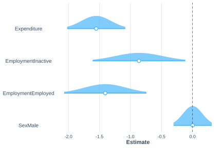

6.1 Modelo de regresión logística
Cuando la variable de interés es dicotómica, tomando valores de cero o uno, el modelo lineal clásico no resulta adecuado debido a que puede generar predicciones fuera del intervalo \((0,1)\) y porque la varianza de la respuesta depende de su media. Para abordar estas limitaciones, se emplea el modelo de regresión logística, uno de los modelos lineales generalizados más utilizados para analizar variables binarias. En el contexto de encuestas de hogares, la regresión logística puede emplearse para analizar la asociación entre una condición de interés, como la pobreza, y características sociodemográficas de los individuos o los hogares.
Considere una variable dicotómica \(Y_k \in \{0,1\}\), cuya esperanza es \(\theta_k=Pr(Y_k=1)\). El modelo de regresión logística relaciona dicha probabilidad con un conjunto de variables explicativas mediante la función de enlace logit, definida como
\[ \log\left(\frac{\theta_k}{1-\theta_k}\right) = \beta_0+\beta_1x_{k1}+\cdots+\beta_px_{kp} =\mathbf{x}_{k}\boldsymbol{\beta} \]
En donde \(\boldsymbol{\beta}\) es el vector de coeficientes de regresión asociado a las covariables. Esta transformación logit convierte el intervalo restringido de probabilidades \((0,1)\) en toda la recta real, permitiendo modelar la relación entre la respuesta y las variables auxiliares mediante un predictor lineal. De manera equivalente, la probabilidad de éxito puede expresarse mediante la siguiente relación:
\[ \theta_k = Pr(Y_k = 1 \mid \mathbf{x}_k) = \frac{\exp(\mathbf{x}_k\boldsymbol{\beta})} {1+\exp(\mathbf{x}_k\boldsymbol{\beta})} \]
De manera equivalente, la probabilidad de que la unidad no presente la característica de interés es \(Pr(Y_k = 0 \mid \mathbf{x}_k) = 1-\theta_k\). Bajo esta parametrización, cada coeficiente de \(\boldsymbol{\beta}\) representa el efecto de una covariable sobre el logaritmo de la razón de probabilidades de que ocurra el evento de interés, manteniendo constantes las demás variables del modelo. La estimación de los parámetros puede realizarse mediante el enfoque de pseudo-máxima verosimilitud. Este método incorpora los factores de expansión en la función de verosimilitud convencional con el fin de obtener estimadores consistentes respecto de la población objetivo. Siguiendo a Heeringa et al. (2017), la función de pseudo-verosimilitud para el modelo logístico se define como
\[ PL(\boldsymbol{\beta}) = \prod_{k} \left[ \theta_{k}^{y_{k}} \left\{ 1-\theta_{k} \right\}^{1-y_{k}} \right]^{w_{k}} \]
En donde el subíndice \(k\) representa una unidad observada de la muestra. Asimismo, \(\theta_{k}\) denota la probabilidad de que la unidad \(k\) de la UPM \(i\) en el estrato \(h\) presente la característica de interés, \(y_{k}\) corresponde al valor observado de la variable dicotómica para dicha unidad y \(w_{k}\) representa el factor de expansión asociado a la observación.
La contribución de cada observación al proceso de estimación está determinada por su respectivo factor de expansión, permitiendo que la función refleje adecuadamente las características del diseño complejo de la encuesta. Dado que la maximización de la pseudo-verosimilitud resulta equivalente a maximizar su logaritmo, entonces el problema se reduce a optimizar la siguiente función:
\[ \ell(\boldsymbol{\beta}) = \sum_{k} w_{k} \left[ y_{k}\log(\theta_{k}) + (1-y_{k}) \log(1-\theta_{k}) \right] \]
Esta expresión constituye la función objetivo utilizada por los algoritmos de optimización numérica para obtener el estimador de los parámetros del modelo. Es importante señalar que la función anterior no corresponde a una verosimilitud en sentido estricto bajo el diseño complejo de la encuesta. Por esta razón, se utiliza el término pseudo-verosimilitud y los estimadores obtenidos mediante su maximización son conocidos como estimadores de pseudo-máxima verosimilitud (Pseudo Maximum Likelihood Estimators, PMLE).
Según Molina & Skinner (1992), bajo condiciones de regularidad, estos estimadores son consistentes y asintóticamente normales, constituyendo la base de los procedimientos de inferencia implementados en la mayoría de los paquetes estadísticos para el análisis de datos de encuestas complejas.
Una vez obtenidos los estimadores de pseudo-máxima verosimilitud, sus varianzas se estiman mediante técnicas de linealización de Taylor (Binder, 1983), las cuales incorporan explícitamente las características del diseño complejo de muestreo. La matriz de varianzas y covarianzas de los parámetros estimados, denotada por \(\text{Var}(\hat{\boldsymbol{\beta}})=\boldsymbol{\Sigma}\), se obtiene a partir de una aproximación lineal de las ecuaciones de estimación alrededor del verdadero valor de los parámetros.
Esta matriz describe la precisión de los estimadores, ya que sus elementos diagonales corresponden a las varianzas de cada coeficiente, mientras que los elementos fuera de la diagonal representan las covarianzas entre pares de coeficientes. Su estimación constituye la base para el cálculo de errores estándar, la construcción de intervalos de confianza y la realización de pruebas de hipótesis sobre los parámetros del modelo.
Como los datos provienen de un diseño muestral complejo, es necesario incorporar adecuadamente las ponderaciones, la estratificación y la conglomeración para obtener estimadores consistentes de los parámetros y de sus errores estándar. En R, esta tarea puede realizarse mediante la función svyglm() del paquete survey, la cual extiende los modelos lineales generalizados al contexto de encuestas complejas.
Siguiendo con la encuesta de ejemplo, y con el fin de analizar los factores asociados a la condición de pobreza, se ajusta un modelo de regresión logística utilizando como variables explicativas el gasto, la situación en el empleo y el sexo. Dado que los datos provienen de una encuesta con diseño muestral complejo, la estimación se realiza mediante la función svyglm() del paquete survey, especificando family = binomial para indicar que la variable respuesta es dicotómica y que se utilizará la función de enlace logit. Los resultados del ajuste se presentan en la Tabla 6.1.
logit_model <- svyglm(
formula = poor ~ Expenditure + Employment + Sex,
family = binomial,
design = survey_design
)En la especificación del modelo, el argumento formula = poor ~ Expenditure + Employment + Sex define la relación entre la variable respuesta poor y las covariables incluidas en el predictor lineal. Para las variables categóricas, la función genera automáticamente las variables indicadoras correspondientes y estima sus efectos con respecto a una categoría de referencia. Por su parte, el argumento design = survey_design incorpora la información del diseño muestral. El objeto resultante, logit_model, contiene los parámetros estimados, sus medidas de precisión y las estadísticas necesarias para realizar inferencia sobre la relación entre la condición de pobreza y las variables explicativas consideradas en el modelo.
Los resultados de la Tabla 6.1 muestran las sestimaciones de los coeficientes de regresión, junto con su error estándar, los intervalos de confirza y el valor-p. Del modelo se deduce que un mayor nivel de gasto se asocia con una menor probabilidad de encontrarse en condición de pobreza. Asimismo, en comparación con la categoría de referencia (desocupados), tanto las personas inactivas como las ocupadas presentan una menor propensión a ser pobres, siendo este efecto más marcado entre estas últimas. En contraste, el sexo tiene una influencia muy reducida sobre la probabilidad de pobreza una vez controlado el efecto de las demás covariables incluidas en el modelo.
## 2.5 % 97.5 %
## (Intercept) 1.448618 2.926867
## Expenditure -0.007044 -0.003752
## EmploymentInactive -1.618341 -0.108547
## EmploymentEmployed -2.076705 -0.737132
## SexMale -0.309026 0.314060| Parameter | term | estimate | std.error | statistic | p.value |
|---|---|---|---|---|---|
| 1 | (Intercept) | 2.188 | 0.373 | 5.863 | 0.000 |
| 2 | Expenditure | -0.005 | 0.001 | -6.497 | 0.000 |
| 3 | EmploymentInactive | -0.863 | 0.381 | -2.266 | 0.025 |
| 4 | EmploymentEmployed | -1.407 | 0.338 | -4.161 | 0.000 |
| 5 | SexMale | 0.003 | 0.157 | 0.016 | 0.987 |
La Figura 6.1 presenta la distribución de los estimadores de los coeficientes de regresión. Se observa que, para todas las covariables excepto el sexo, los intervalos de confianza no incluyen el valor cero, lo que proporciona evidencia de una asociación estadísticamente significativa. En contraste, el intervalo de confianza asociado a la variable sexo contiene el valor cero, por lo que no se encuentra evidencia suficiente para concluir que esta variable tenga un efecto significativo una vez controladas las demás covariables incluidas en el modelo.
Para visualizar la distribución de los coeficientes se emplea plot_summs() del paquete jtools, junto con ggstance (Henry et al., 2024) para la geometría horizontal de los intervalos.

Figura 6.1: Distribución de los parámetros del modelo logístico base
El modelo puede ampliarse incorporando términos de interacción para evaluar si el efecto de una variable explicativa depende de los valores que toma otra. En este caso, se incluye una interacción entre el sexo y la situación laboral mediante el término Sex:Employment, con el objetivo de analizar si la relación entre el estado ocupacional y la probabilidad de pobreza es la misma para hombres y mujeres. Sin este término, el modelo asume que el efecto de la situación laboral sobre la pobreza es idéntico para ambos sexos. En cambio, al incorporar la interacción, se permite que dicho efecto varíe entre hombres y mujeres, capturando posibles diferencias en la forma en que la condición laboral se asocia con la pobreza en cada grupo. Los resultados del modelo ajustado se presentan en la Tabla 6.2.
interaction_logit_model <- svyglm(
formula = poor ~ Expenditure + Employment + Sex + Sex:Employment,
family = binomial,
design = survey_design
)| term | estimate | std.error | statistic | p.value |
|---|---|---|---|---|
| (Intercept) | 1.770 | 0.610 | 2.900 | 0.004 |
| Expenditure | -0.005 | 0.001 | -6.473 | 0.000 |
| EmploymentInactive | -0.395 | 0.594 | -0.665 | 0.507 |
| EmploymentEmployed | -1.059 | 0.570 | -1.860 | 0.066 |
| SexMale | 0.587 | 0.748 | 0.785 | 0.434 |
| EmploymentInactive:SexMale | -0.846 | 0.860 | -0.984 | 0.327 |
| EmploymentEmployed:SexMale | -0.481 | 0.760 | -0.633 | 0.528 |
Al incorporar la interacción entre sexo y situación laboral, el gasto continúa mostrando una asociación negativa y estadísticamente significativa con la probabilidad de pobreza, manteniéndose como la covariable con mayor evidencia explicativa dentro del modelo. En contraste, los efectos principales de la situación laboral pierden importancia estadística una vez que se incluyen los términos de interacción, lo que sugiere una mayor incertidumbre en la estimación de sus efectos. Por su parte, ni el efecto principal del sexo ni los coeficientes asociados a las interacciones entre sexo y situación laboral resultan estadísticamente significativos al nivel del 5%. En consecuencia, la inclusión de los términos de interacción no parece aportar información adicional relevante respecto al modelo sin interacción.
La Figura 6.2 presenta una comparación de las estimaciones de los coeficientes y sus respectivos intervalos de confianza para los modelos con y sin interacción. Se observa que la incorporación de los términos de interacción incrementa la incertidumbre asociada a varios de los parámetros, lo que se refleja en intervalos de confianza más amplios. Asimismo, los coeficientes de interacción presentan estimaciones cercanas a cero y amplios intervalos de confianza que incluyen dicho valor, lo que coincide con la falta de evidencia estadística para concluir que el efecto de la situación laboral sobre la probabilidad de pobreza difiere entre hombres y mujeres.

Figura 6.2: Comparación de los parámetros del modelo logístico con y sin interacciones